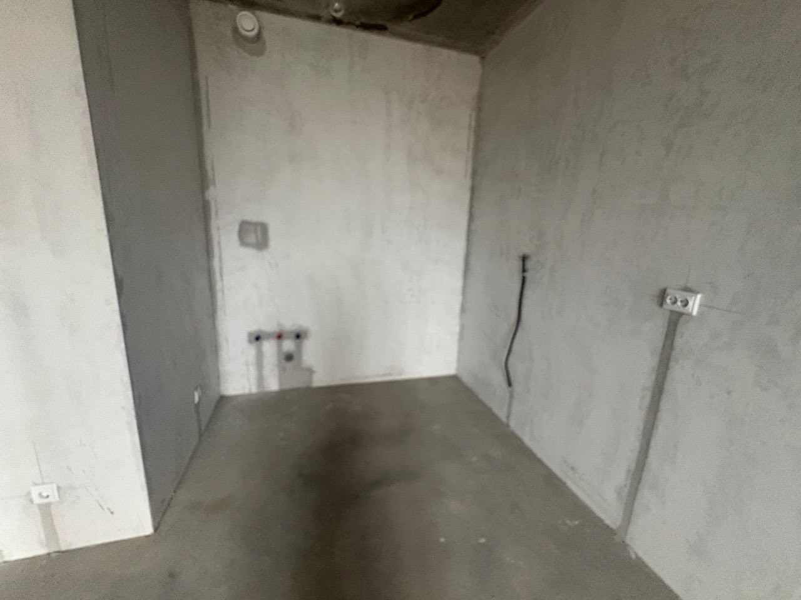
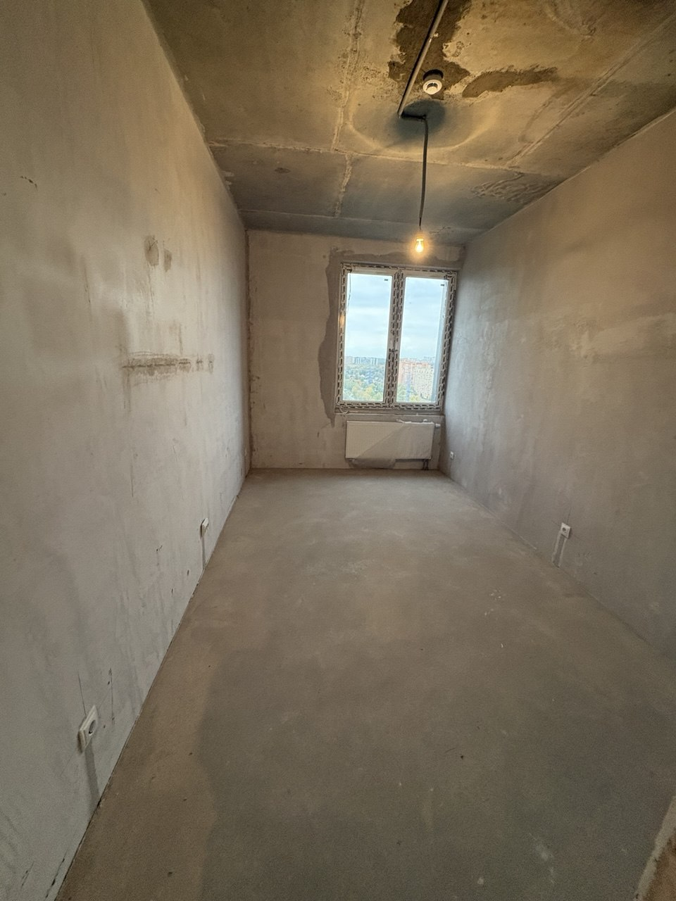
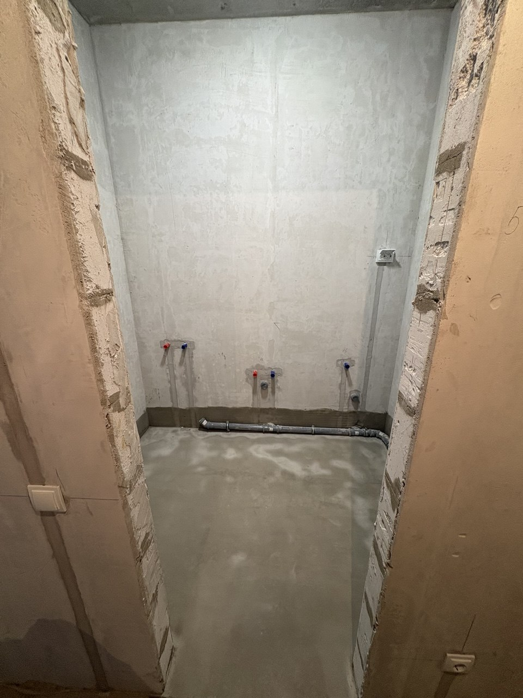
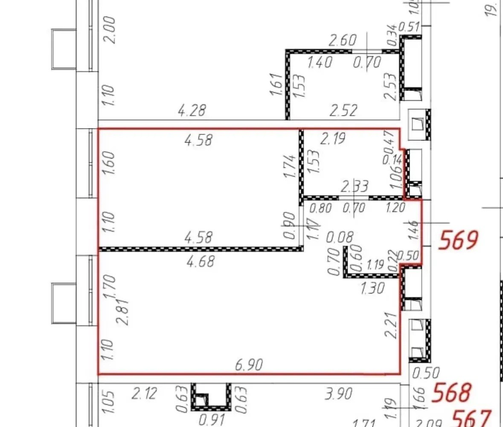

Тяните, чтобы вращать. Колесо или щипок — приблизить. Нажмите на предмет, чтобы узнать, что это.
Кухня-гостиная остаётся как была. Три новых помещения собраны в той же палитре — тауп, светлый камень, дуб-ёлочка, чёрная фурнитура — чтобы квартира читалась одним целым, а не набором отдельных ремонтов. Ниже решения и, главное, почему именно так.
Палитра пересобрана под выбранную кухню. Берём от неё фасады и столешницу, компоновка модулей остаётся наша — та, что считана от воды, канализации и вентканала на торцевой стене.
| Элемент | Материал |
|---|---|
| Нижние фасады, ящики | серый глянец #767B81, чёрные рейлинговые ручки на ящиках |
| Колонна с духовкой, короб холодильника, антресоль | графит матовый #3C4046 |
| Навесные шкафы 1,45–2,35 | серый глянец — по вашей правке, как ящики внизу |
| Столешница 38 мм, фартук, барная стойка | дуб вотан, то же дерево |
| Цоколь | дуб тёмный — как на референсе, а не чёрный |
| Мойка, смеситель, профиль Gola, техника | чёрный |
Главное отличие от прежней версии: ушёл тауп и «мрамор». Дерево осталось на столешнице, фартуке, барной стойке и цоколе — одной горизонтальной полосой на уровне глаз. Именно фартук из того же дуба, что столешница, делает картинку, когда по нему идёт подсветка. Чёрная ниша над посудомойкой остаётся.
Кухня занимает торец 19-метровой комнаты, поэтому её палитра задаёт всю гостиную. Разложил так, чтобы серо-графитовый блок не выглядел инородным пятном:
| тёплый серый #C9C4BC | стены всех комнат — вместо прежнего бежевого. Держит серый кухни, но на полтона светлее, чтобы комната 2,81 м не давила |
| дуб-ёлочка | пол без изменений: он и так перекликается со столешницей |
| светлый серо-беж #BFBDB7 | диван — ушёл от тёплого бежа к нейтральному |
| графит #3C4046 | подушки на диване и ТВ-тумба — тот же графит, что колонна кухни: два пятна, чтобы цвет не был одиноким |
| дуб в текстиле #A98E63 | плед и акцент в картине — эхо столешницы на другом конце комнаты |
| серый матовый #7A7F85 | шкафы в спальне и прихожей, фасад тумбы в санузле: тот же цвет, но матовый — глянец уместен только на кухне |
| рифлёный дуб | акцентная стена санузла — переведена с таупа на дерево, вслед за кухней |
| травертин | санузел без изменений |
Что осталось от прежней версии: пол, травертин санузла, чёрная фурнитура, плиссированные подвесы над баром, льняные шторы. Что ушло: тауп, белый кварц, тёплый беж стен, тёмно-коричневая тумба.
Комната-пенал: окно 1,60 в торце на запад, дверь 60 см в противоположном торце. Сейчас в модели только кровать и шкаф — остальное вы попросили снять.
Решение вынужденное. В гостиной телевизор висит на стене со спальней — ставить к той же стене изголовье нельзя, вы будете слушать телевизор головой. Остаётся стена с соседями: сосед за стеной предсказуемее телевизора в тридцати сантиметрах от головы. Эту стену, как и стену за телевизором, стоит зашить каркасом с минватой. Кровать 160 × 200, габарит x от −2,26 до −0,66.
У изножья остаётся проход 0,70 м — чистая арифметика: глубина комнаты 2,70 минус длина кровати 2,00. Ширина кровати на проход не влияет: 140 вместо 160 не даст ни сантиметра. Единственный способ выиграть — кровать длиной 190: проход станет 0,80. Развернуть кровать некуда, короткие стены по 2,70 заняты окном и дверью.
Шкаф-купе 178 × 60, высота 2,50, встал вдоль восточной стены — от стены соседей до проёма двери. Это вся свободная длина этой стены, 1,785 м, шкаф занимает её целиком.
Убраны прикроватные тумбы, бра, комод с круглым зеркалом, кресло, торшер и ковёр. Электрику под них я оставил в плане — это выводы в стене, их дешевле заложить сразу, чем потом штробить по отделке:
По вашей правке: ванна вместо душа, обычный напольный унитаз вместо подвесного, стиральная машина в санузле. Планировка пересобрана от труб — все семь выводов застройщика сидят на северной стене, и они диктуют, что где стоит.
Ванну пришлось поставить не вдоль длинной стены, а вдоль короткой — и это оказалось удачей. Глубина санузла 1,545 м, ванна 1,50 входит с зазором 4,5 см. А главное: её изголовье упирается в северную стену ровно там, где застройщик вывел W1 и W2 на высоте 0,45 — это штатная отметка смесителя ванны. Смеситель садится на готовые выводы, переносить нечего.
Почему не вдоль северной стены: ванна 1,50 заняла бы x 1,23…2,73 и накрыла бы выводы раковины W3/W4/W5. А главное — оставшаяся полоса 0,845 м годится только на проход, и ни раковина, ни машина туда уже не встают.
Инсталляцию убрал. Унитаз-компакт встаёт прямо над выпуском 110 (W7, x 3,23). Ось унитаза — x 3,17, это 6 см смещения, берётся эксцентриковой манжетой.
Тесновато справа: до стены стояка 0,25 м по оси. Но стена там со ступенькой — на уровне сидения она отодвинута до x 3,56, то есть у плеча 0,39 м. Узко только за бачком. Для 3,5 м² это нормальная цифра.
Вы попросили поставить машину напротив унитаза. Я посчитал — это физически невозможно, и дело не в раскладке, а в арифметике:
| Что | Размер |
|---|---|
| Глубина санузла | 1,545 м |
| Унитаз-компакт от стены | −0,65 м |
| Стиральная машина от противоположной стены | −0,60 м |
| Остаётся между ними | 0,295 м |
Сидя на унитазе коленям нужно минимум 0,60 м. Даже если взять узкую машину глубиной 0,45 и компактный унитаз 0,60 — остаётся 0,495 м, всё равно мало. Плюс дверь санузла занимает на южной стене участок x 2,04…2,74, и единственный свободный кусок напротив унитаза — как раз x 2,74…3,56, то есть прямо в колени.
Что сделал вместо этого: машина стоит на той же северной стене, через проход от унитаза, под каменной столешницей, а сверху на ней раковина. Это даёт:
Плата за это — раковина над машиной мелкая и чуть высоковата (борт ~0,95). Если такой компромисс не нравится, альтернатива одна: унести машину из санузла. Есть два места. В прихожей — но туда придётся тянуть воду и слив, это дорого. На кухне — застройщик там предусмотрел третий холодный отвод и слив 50, но после перестановки эти выводы ушли под посудомойку, и машину пришлось бы ставить вместо шкафа 60. Скажите, если хотите посмотреть такой вариант.
Узел, через который проходит всё: вход, санузел, спальня и проход 0,92 в гостиную. Поэтому в центре ничего не стоит — мебель только по периметру.
Вы называете площадь квартиры ≈ 37,7 м². По обмеру модели получается так:
| Помещение | Размер | Площадь |
|---|---|---|
| Кухня-гостиная | 6,90 × 2,81 | 19,4 |
| Спальня | 4,58 × 2,70 | 12,4 |
| Санузел | 2,19…2,33 × 1,53 | 3,5 |
| Прихожая | — | 3,1 |
| Итого жилая площадь | 38,4 | |
| Входной тамбур | 0,50 × 1,50 | 0,8 |
Расхождение с вашими 37,7 м² — 0,7 м², это 2 %. Сидит оно почти наверняка в прихожей: единственное помещение, которое на чертеже вообще не оразмерено, её габариты я вывел из обмера пикселей. Все остальные цифры — прямо с подписей чертежа. Если у вас есть экспликация с площадями по комнатам, пришлите — подгоню прихожую под неё.
Стены теперь имеют реальный объём. Толщины замерены по штриховке чертежа и приняты так:
Внутренние размеры комнат от этого не изменились — стены нарастили наружу. Но в режиме «Сверху» квартира теперь читается как объём, а не как набор плоских полосок.
Проверил все четыре двери по габаритам открытого полотна, а не на глаз. Главный критерий — открытая дверь не должна перекрывать ни мебель, ни основной маршрут по квартире. Маршруты здесь всего три: входная дверь ↔ гостиная (самый частый), входная дверь ↔ спальня, и санузел ↔ всё остальное.
Было: петли на западном косяке (x 2,04), открывается наружу. Стало: петли на восточном (x 2,69), открывается наружу.
Наружу — без вариантов: внутрь в 3,5 м² дверь съест единственный свободный пятачок перед раковиной, и если человеку станет плохо и он упадёт за дверью, её не откроют. Вопрос был только в стороне петель, и оба варианта геометрически проходят. Решил так:
Единственная плата: открытое полотно подходит к банкетке на 5 см. Сидеть на банкетке это не мешает (она развёрнута на север), но если захочется запаса — банкетку можно сдвинуть к восточной стене или взять на 10 см короче.
Было: петли на северном косяке (z −2,44). Стало: на южном (z −1,76). Открывается внутрь спальни в обоих случаях — наружу нельзя, дверь встанет в прихожую и перекроет и санузел, и проход в гостиную.
Цена: выключателю не осталось места в проёме. Со стороны ручки (север) сразу шкаф — там два сантиметра. Поэтому выключатель B27 переехал на южную стену спальни, на x 0,45 — западнее габарита открытого полотна (оно встаёт по x 0,53…1,13). Это на 70 см дальше от двери, чем идеально, но дотянуться, входя в комнату, нормально. Розетка под пылесос B28 — там же, но ниже.
Исправлено по вашему замечанию: полотно 90 см уходит в общий коридор. Тамбур 0,50 × 1,50 м — внутрь такая дверь открывалась бы в саму себя. Наружу это ещё и норма пожарной безопасности для квартирных дверей.
| Дверь | Полотно | Петли | Куда |
|---|---|---|---|
| Входная | 90 | северный косяк | наружу, в общий коридор |
| Спальня | 60 | южный косяк | внутрь спальни |
| Санузел | 60 | восточный косяк | наружу, в прихожую |
| Гостиная | — | — | проём 0,92 без двери |
В 3D двери показаны приоткрытыми примерно наполовину. На плане дуга рисуется на полный размах — так видно, сколько места дверь реально требует. Проёмы: санузел 0,70 (готовый, подходит под полотно 60 с коробкой), спальня 0,68.
Короткий ответ: рулонные — да, но не везде одинаковые и не вместо ткани целиком. В 3D добавлена кнопка «Шторы», она переключает три варианта: ткань, рулонные, комби. Посмотрите все три, но вот аргументы.
Если всё-таки хочется только рулонные и нигде ткани: заложите вместо неё другое звукопоглощение — ковёр крупнее (не 220 × 145, а во всю зону дивана), акустическую панель за телевизором (она же решает проблему шума в спальню) и мягкое изголовье кровати. Иначе по акустике вы потеряете больше, чем выиграете по виду.
По вашему замечанию шкаф 80 × 35 между дверью санузла и дверью спальни снят. Это заметно развязало узел: именно в этот участок стены приходит открытая дверь санузла, и именно здесь расходятся все три маршрута. Теперь свободная глухая стена длиной 0,81 м между проёмами — туда уехала розетка под базу робота-пылесоса (H25), больше там ничего не нужно.
Что потеряли: место под швабры и бытовую химию. Варианты, куда это переселить: верхняя полка шкафа-купе в спальне, либо шкаф в прихожей 118 × 50 — у него 2,50 высоты, нижний отсек можно сделать хозяйственным. Второе логичнее: там же будет пылесос и роутер.
Новый порядок по вашей схеме. Суммы сходятся точно, без подрезок:
| Линия | Модули от угла | Сумма |
|---|---|---|
| Торец, 2,21 м | холодильник 60 · посудомойка 45 · мойка 60 · угол 56 | 221 |
| Стена к соседям | шкаф 45 · плита 60 с духовкой под ней · шкаф 60 со встроенной СВЧ | 165 |
| Дальше | барная стойка 160 × 60, вплотную к шкафу 60 | — |
Что стало лучше. Рабочей поверхности было 2,81 м, стало 3,26 м — колонна с духовкой больше не съедает метр стены, а холодильник встал в мёртвый угол у перегородки, где всё равно неудобно работать. Треугольник холодильник — мойка — плита получился компактный: от холодильника до мойки 1,0 м, от мойки до плиты 1,3 м через угол.
Холодильник: петли со стороны перегородки, открытая дверь ложится вдоль неё и ничего не задевает. Прежняя проблема, когда дверь била по барному стулу, исчезла вместе с коробом.
Плита и духовка: варочная на 4 конфорки 60 см, духовка встроена прямо под ней. СВЧ справа от плиты — в нижней части навесного шкафа 60, сверху над ней обычный шкафчик.
Над баром два подвеса вместо трёх, шаг 0,84 м по оси стойки.
Угол выглядел плохо по двум конкретным причинам, обе исправлены.
Навесные шкафы глубиной 33 см на двух стенах не встречались: ряд на торце занимал x 3,12…3,45, ряд на стене соседей кончался на x 2,85. Между ними оставалась полоса голой стены 27 см на всю высоту навесных и антресоли — именно она и читалась как недоделка.
Решение: крайний навесной на стене соседей расширен с 45 до 72 см (две створки по 36) и доведён вплотную к боковине торцевого ряда. Теперь Г-образный верх идёт непрерывно, и антресоль вместе с ним. Это ещё и +0,09 м³ полезного объёма — в маленькой кухне не лишнее.
Важно: ширины верха и низа не обязаны совпадать. Внизу на этом месте шкаф 45, вверху 72 — так и должно быть, потому что нижний угол занят торцевым модулем, а верхний свободен на всю глубину.
Угловой модуль 56 см имеет глубину 60 см. Дверца плюс полка в такой коробке — это когда всё, что уехало к задней стенке, вы достаёте на ощупь и на четвереньках. Заменил на два глубоких выдвижных ящика на полном выдвижении: содержимое выезжает к вам целиком.
Нет «слепого угла». Торцевой модуль занимает квадрат x 2,85…3,45 × z 0,845…1,405, а модуль 45 на стене соседей встаёт вплотную к его боковине на x 2,85. Два ряда стыкуются без остатка, поэтому ни карусели, ни «волшебного уголка», ни мёртвой зоны — ничего этого не нужно. Это прямое следствие вашей раскладки: сумма 60 + 45 + 60 + 56 = 221 закрывает торец ровно.
Прогнал по всем 65 накладкам автоматическую проверку: из каждой точки пускается луч назад — есть ли за ней стена или корпус мебели, и вперёд — не перекрыта ли она чем-то вплотную. Нашлось и исправлено шесть ошибок:
| Код | Что было | Как исправлено |
|---|---|---|
| W9 | стояла на x 3,45 — внутри толщи стены санузла, которая здесь на 3,42 | вынесена на внутреннюю грань 3,42 |
| K29 | висела в воздухе в 22 см от барной стойки: координата осталась от старого положения бара | перенесена в свободный торец стойки, между двумя стульями |
| W22 | оказалась ровно за полотенцесушителем | сдвинута на 7 см южнее, рядом с ним |
| W24 | висела в 16 см от стены: на этой отметке стена отступает на уступ стояка | посажена на реальную грань 3,56 |
| W8 | значок лежака торчал на 13 см от стены | прижат к основанию стены |
| B22 | маркер бра был вынесен в комнату для читаемости плана и висел в воздухе в 3D | на стене; на плане его всё равно отводит автораскладка подписей |
Ещё одна находка, уже не про графику:
Выводы воды для ванны оказываются за её бортом. W1 и W2 выведены на высоте 0,45, борт ванны — 0,56. То есть готовые водорозетки встанут за корпусом, и доступа к ним не будет. Раньше я писал, что смеситель садится на них без переделки — это было неверно.
Нужно поднять обе точки штробой на 0,78 (новая точка W25) — это 33 см вверх по северной стене. Отметка 0,78 даёт излив примерно на 20 см выше борта, то есть штатную высоту для настенного смесителя ванны. Работа копеечная, но заложить её надо до плитки.
Перестановка сдвинула мойку и плиту относительно готовых выводов застройщика. Три последствия, два мелких и одно серьёзное.
Выводы K3 (холодная, z −0,415) и K4 (горячая, z −0,25) оказываются за холодильником: он занимает z −0,805…−0,205. Соединения за техникой, которую никто никогда не отодвигает, — это то, с чего начинаются протечки у соседей снизу. Штробим торцевую стену и выносим обе точки вправо, в шкаф мойки (K40, z 0,55). За холодильником не должно остаться ничего.
Повезло с остальным: третий холодный отвод K5 и слив K6 попадают ровно внутрь шкафа посудомойки — их не трогаем. Слив мойки идёт к K6 по цоколю: 0,72 м, уклон 2 см/м, перепад высот с запасом.
Вентканал K1 застройщик вывел у потолка над бывшей мойкой, то есть теперь над холодильником. Плита уехала на стену к соседям. Воздуховод от вытяжки до канала получается 3,1 м с двумя поворотами на 90°: 1,35 м вдоль стены соседей и 1,8 м вдоль торца, всё прячется в антресоль 2,37…2,68. На плане этот маршрут показан синим пунктиром при включённом слое «Вода».
Что это значит на практике. Каждый поворот 90° в круглом 125-м канале стоит примерно как 2 метра прямой трубы, то есть эффективно это около 7 метров. Обычная встроенная вытяжка на 400 м³/ч такую трассу не продавит — реальная производительность упадёт вдвое. Нужна вытяжка минимум на 650–700 м³/ч и канал 125 мм, а лучше плоский 60 × 204 (он эквивалентен 125 круглому и лучше лезет в антресоль). Плюс обратный клапан у самого канала. Если не хочется — вариант без воздуховода: вытяжка на рециркуляцию с угольным фильтром, но для плиты на 4 конфорки в кухне-гостиной это заметно хуже.
Была варочная домино на 2 конфорки, 3,7 кВт. Стала полноразмерная на 4 конфорки: индукция 60 см — это 7,0–7,4 кВт. Линия, которую я закладывал раньше (3×2,5, автомат 16 А), такого не выдержит. Нужно 3×4 и автомат 32 А. Это надо сказать электрику до штробления: кабель 4 мм² в готовую штробу под 2,5 потом не затянуть.
Добавлены плоские накладные светильники на потолке и мягкий свет. Управление двумя способами:
Источники потолочных светильников намеренно не отбрасывают теней: шесть теневых карт от точечных источников давали грязные двойные контуры под мебелью и ничего не добавляли к картинке. Тени остаются от солнца и от торшера.
| Код | Что | Где |
|---|---|---|
| K33 | Плоский потолочный, Ø 52 | центр рабочей зоны кухни |
| K35 | Подсветка под шкафами — мягкий свет | по низу навесных, над мойкой, нишей и плитой |
| L26 | Два подвеса | над барной стойкой |
| L27 | Плоский потолочный, Ø 60 | зона дивана |
| B29 | Плоский потолочный, Ø 56 | спальня, по центру кровати |
| B22 | Два бра над изголовьем — мягкий свет | спальня, на 1,30 по краям изголовья |
| H28 | Плоский потолочный, Ø 40 | прихожая |
| W23 | Плоский потолочный IP44 | санузел |
Почему плоские, а не люстры: потолок 2,70 за вычетом натяжного — это 2,65. Подвес в спальне над проходом 0,70 у изножья кровати вы будете задевать головой. Плоский накладной светильник 5–7 см высотой этой проблемы не создаёт, а по свету при хорошем рассеивателе не хуже. Подвесы оставлены только над баром, где под ними никто не ходит.
Мягкий свет — это бра в спальне и лента под шкафами на кухне: оба дают свет от стены и вниз, без слепящей точки в поле зрения. Бра берите с кнопкой на корпусе, тогда проходные выключатели у кровати не нужны. На кухне лента управляется и выключателем у входа (вторая клавиша K30), и бесконтактным датчиком под шкафом (K32) — взмах рукой, когда руки мокрые.
Жалоба на кулер была справедливой: сцена перерисовывалась непрерывно всё время, пока открыта вкладка, хотя она статична и меняется только когда вы что-то делаете. Замерил на шести секундах простоя (страница открыта, мышь не трогаем): было 26 520 вызовов отрисовки, стало 0. Что сделано:
shadowMap.autoUpdate = false): при смене режима, освещения или когда прячется стена. Раньше карта теней 2048 × 2048 плюс тень от торшера считались каждый кадр.Что осталось дорогим по задумке: мягкие тени PCF и процедурная генерация всех текстур при загрузке. Первые 2–3 секунды после открытия страница честно считает дерево, мрамор, ткань и ёлочку пола — зато в файле нет ни одной внешней картинки и он работает без интернета.




Геометрия всей квартиры снята с чертежа обмером по пикселям: красный контур 708 × 577 px при масштабе 102,6 px/м, то есть 6,90 × 5,63 м по внутренним граням. Положение существующих выводов снято с фотографий: по кухне — через калибровку камеры по четырём известным стенам (±10–15 см), по остальным комнатам — пропорционально видимому участку стены от пола до потолка (±10 см по месту, ±5 см по высоте). Вкладка «Розетки» показывает их все с кодами.